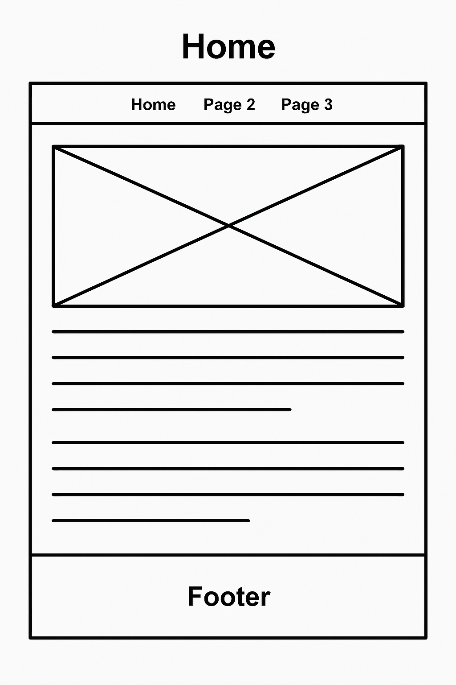
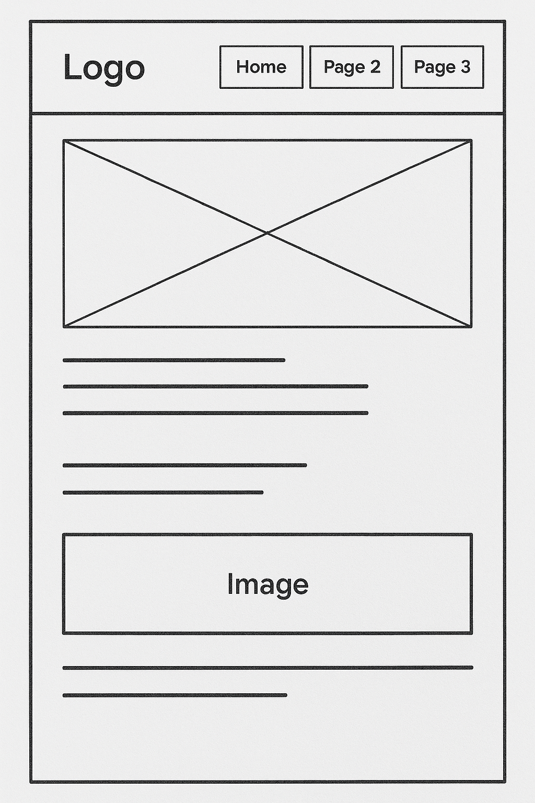

Overview
Purpose
Meal Mate helps users find meal ideas based on the ingredients they already have at home. It aims to reduce food waste, save money, and help users track nutrition.
Audience
The intended audience includes college students, busy professionals, and families who want to eat affordably without wasting food. It is for anyone who wants simple meal planning and better use of pantry items.
Dynamic elements
JavaScript will be used to dynamically filter and display recipes based on the user's pantry inputs. It will include features like real-time updates to ingredient lists, calculating nutrition using objects and array methods, and DOM interaction for form inputs and recipe selection.
Branding
Website Logo
Style Guide
Color Palette
Palette URL: https://coolors.co/396e94-e7c24f-a43312-381d2a-aabd8c| Primary | Secondary | Accent 1 | Accent 2 |
|---|---|---|---|
| #396E94 | #E7C24F | #A43312 | #AABD8C |
Typography
Heading Font: Montserrat
Paragraph Font: Open Sans
Normal paragraph example
Welcome to Meal Mate, your kitchen companion that helps you create meals from what’s already in your pantry. Save money, reduce food waste, and eat well.
Colored paragraph example
Get started by selecting your ingredients, and we’ll show you meals you can make in under 30 minutes. No trips to the store required.
Navigation
Content
Home page
The home page welcomes users and explains the purpose of the site. It includes a brief tutorial on how to use Meal Mate and has a call to action for users to start selecting pantry ingredients. Images will show examples of delicious meals.
Meal Ideas
This page shows meal options based on selected ingredients. Each meal displays a photo, cooking instructions, and a list of matching and missing ingredients. It also includes a nutrition summary (calories, protein, etc.).
Wireframes
Create two wireframes for your site. One for each page and list them here.
Home
The home page includes a hero section, intro text, and “Start Planning” button. A few example meals are previewed to inspire recipe exploration.
Meal Ideas
This page includes a pantry form on the left and meal suggestions on the right. Each recipe card will include a button to expand full recipe details and nutrition info.
